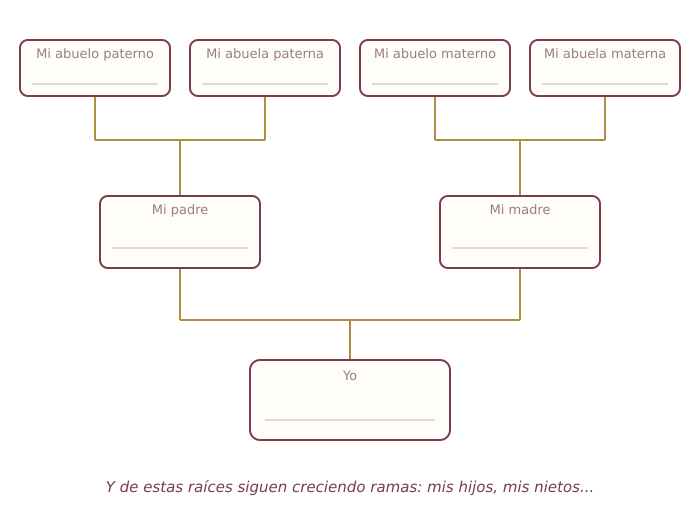

El Rincón de la Abuela
Mis memorias, contadas por mí,
para que mi historia se quede
con los que más quiero
Para escribir a mano y heredar
Un regalo para la familia,
escrito con su puño y letra
Este no es un libro para leer: es un libro para escribir. El autor es usted, y el tema es el más interesante de todos: su vida.
Adentro hay preguntas que le irán jalando los recuerdos, con renglones para responder a mano. Imprímalo completo (quedan muy bonitas las hojas engargoladas) y llénelo con calma: una sección por semana, con su café, sin prisa. No importa la letra ni la ortografía: importa su voz.
Cuando lo termine, tendrá en las manos un tesoro que ningún dinero compra: su historia, contada por usted, para sus hijos, sus nietos y los que vienen. El mejor regalo que puede dejar una persona.
Con cariño, La Abuela
Esta es la historia de
contada por mí mismo, con mi puño y letra,
para mi familia.
Empecé a escribirla el día _______ de ____________ de ________
Capítulo 1
◆ ◆ ◆
"Para saber a dónde va uno, hay que saber de dónde viene."
¿Quién lo escogió? ¿Por un santo, un abuelo, una promesa?
La fecha, el pueblo o ciudad, y lo que contaban de ese día.
Su carácter, su trabajo, su risa, lo que más recuerdo de cada uno.
Sus nombres, de dónde eran, algún consejo o costumbre suya.
¿De adobe, de ladrillo? ¿Qué se veía desde la puerta? ¿Dónde dormían todos?
La plaza, la iglesia, el mercado, los vecinos, los sonidos de la calle.
Capítulo 2
◆ ◆ ◆
"Éramos pobres de dinero y millonarios de calle y de juego."
Canicas, muñecas de cartón, el trompo, las escondidas, el río...
Su nombre, cómo se conocieron, qué travesuras hacían juntos.
Hasta qué año estudié, mi maestra o maestro, el pizarrón, el recreo.
El pan recién hecho, la tierra mojada, el guiso de mamá...
Las posadas, los Reyes, la feria del pueblo, qué se comía, quién venía.
Capítulo 3
◆ ◆ ◆
"Tenía pocos pesos en la bolsa y el mundo entero por delante."
¿Serio, fiestero, trabajador, soñador? ¿Cómo me describían?
Las canciones, los artistas, dónde se bailaba y con quién.
¿Se cumplió? ¿Cambió por otro mejor?
Capítulo 4
◆ ◆ ◆
"De todas las historias de mi vida, esta es la que más me gusta contar."
Dónde fue, quién los presentó, qué pensó usted al verle.
Las serenatas, las cartas, los permisos, las suegras...
La iglesia, el vestido, el mole, quién bailó hasta el final.
Capítulo 5
◆ ◆ ◆
"Mi mejor obra no se cuelga en la pared: se sienta a mi mesa."
Una línea para cada uno: cómo es, qué le admiro, algún recuerdo suyo de chiquito.
Sus nombres, qué me hace reír de cada uno, qué les deseo.
La comida del domingo, la posada, la visita al panteón, el rosario...
Escríbala completa: ingredientes y modo. Que no se vaya con usted.
Capítulo 6
◆ ◆ ◆
"Todo lo que tengo salió de estas dos manos y de Dios."
El oficio, el campo, la casa, el negocio; cómo empezó todo.
Para que mis nietos sepan que las tormentas también se pasan.
Capítulo 7
◆ ◆ ◆
"Esto no viene en los libros: viene en los años."
Capítulo 8
◆ ◆ ◆
"Hay cosas que se dicen mejor por escrito, para que se puedan releer cuando haga falta."
Para: ______________________________________
Con todo mi amor: ____________________
Para: ______________________________________
Con todo mi amor: ____________________
Para: ______________________________________
Con todo mi amor: ____________________
Para la posteridad
◆ ◆ ◆
"Aquí cabemos todos."
Escriba los nombres en cada recuadro. Si no recuerda alguno, pregunte a la familia: esa plática también es herencia.

Pegue aquí (o pida que peguen) las fotos que cuentan su historia, y escriba abajo quiénes salen y de qué año es.
Lo que acaba de terminar no es un cuaderno: es la memoria de su familia. Guárdelo donde lo encuentren, enséñelo en la próxima reunión, y deje dicho a quién se lo hereda. Gracias por contarse.
De la misma casa: el recetario "La Cocina de Antaño", las "Sopas de Letras Gigantes", "Cocina que Cuida", la guía "WhatsApp sin Miedo" y nuestro devocional de 30 días.
© 2026 El Rincón de la Abuela · Contenido original · Edición 1
Uso personal del comprador; prohibida su reventa o distribución.
Atención y pedidos: [WhatsApp del negocio]